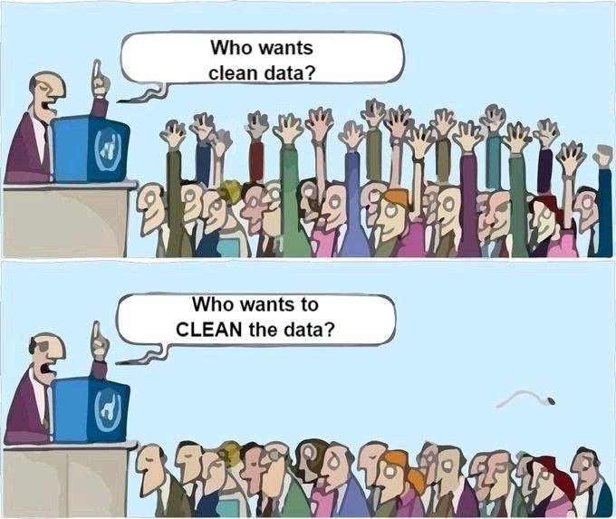

Tidying Messy Spreadsheets with OpenRefine
![]()
Data Cleaning: A Foreword
Real-world datasets are rarely neat. They often come with inconsistencies, errors, missing values, and formatting issues that can throw off analysis and lead to misleading conclusions. That’s why planning your data preprocessing steps in advance is so important—it allows you to anticipate common challenges and set up strategies to standardize formats, handle missing data, and resolve discrepancies efficiently.
This process, known as data cleaning—or sometimes data wrangling, harmonization, or refinement—is essential to any data-driven project. It involves identifying and fixing issues like missing values, duplicates, formatting problems, and outliers. With thoughtful planning, data cleaning can dramatically improve the quality and reliability of your data, leading to clearer insights and better decisions.
We all love the idea of working with clean, reliable data—it’s what makes everything else possible. But when it comes to actually doing the cleaning? Well… that’s a different story.

Source: Adapted from Schmarzo (2021).
Thomas Edison once said, “Genius is 1% inspiration, 99% perspiration.” And guess what? For most projects involving data, a big part of the perspiration can be attributed to data cleaning. It’s not glamorous, but without it, great findings could not see the light of day.
Even though it’s a critical part of the workflow—and often takes up about 60% of a data professional’s time1—data cleaning is sometimes seen as tedious or less exciting. But in truth, it’s the foundation of trustworthy analysis. Without clean data, even the most advanced models or tools won’t deliver meaningful results. In short: clean data, better outcomes.
Though data cleaning may not be as gratifying as deriving insights from analysis, it is a crucial and often time-consuming task. Ensuring that data is accurate, consistent, and error-free requires considerable effort, particularly when dealing with large datasets where even small inconsistencies can lead to flawed results. The attention to detail required for this task makes data cleaning one of the most labor-intensive aspects of data analysis.
Although the cleaning process may vary depending on the dataset, the following tips will help you streamline this task and improve the consistency, accuracy, and quality of your data.
Source: UCSB Library Data Literacy Series. Click to expand: (perma.cc/HE29-3QVH).
Important Considerations
Effective data cleaning begins with thorough assessment, preparation and planning. By identifying potential issues, setting clear protocols, and ensuring reproducibility, researchers can maximize the value of their data while maintaining accuracy, compliance, and efficiency.
Without proper planning, aggressive cleaning methods can inadvertently remove valuable information. Establishing clear criteria for data retention, transformation, and exclusion helps maintain the dataset’s integrity while eliminating irrelevant or misleading entries.
Because data cleaning cannot always be an entirely objective task, Rawson & Muñoz (2016)2 caution researchers to prioritize index-making strategies rather than immediately jumping into normalization. In this approach, the first step is to identify the communities in which the data holds meaning, clarify any questions related to the datset, and to explore the concepts that shape and structure the data. Then, have all decisions made along the way documented.
A common data cleaning mistake is relying too heavily on manual processes and documentation, which are not only time-consuming but also highly prone to human error. This is where automation tools come in—streamlining the cleaning process and significantly improving accuracy.
While leveraging programmatic techniques, data cleaning can be more efficient, scalable, and reproducible, especially when working with large datasets. The good news is that non-coders can also take advantage of tools to support a more reproducible data cleaning workflow without losing track of changes and required transformations along the way.
Course Description
This course introduces data cleaning best practices with the support of OpenRefine, a powerful open-source and non-programmer friendly tool designed to clean, transform, and structure messy datasets with efficiency and precision. By learning how to identify and resolve common data quality issues, you will gain the skills needed to ensure that your spreadsheets are reliable, standardized, and ready for deeper analysis. Whether you’re working with survey results, bibliographic records, recorded observations, financial reports, or any other tabular data, mastering data-cleaning techniques will enhance the integrity and reusability of your datasets.
Through hands-on activities we will explore how OpenRefine helps detecting anomalies, streamlines data cleaning, and allows for more consistent and reproducible workflows. By the end of this workshop, you will be equipped with practical skills to tidy and refine tabular datasets, enabling more accurate and meaningful data-driven work in your field.
We also encourage learners to also explore our handouts from our Data Literacy Series with practical recommendations on related topics, including: handling missing data, dealing with encoding issues, keeping spreadsheets organized and control for quality in tabular data.
Learning Goals
In this hands-on workshop, you’ll learn how to efficiently clean, transform, and structure messy spreadsheets using OpenRefine, a powerful open-source tool for data wrangling. Whether you’re tackling inconsistencies, duplicates, or complex formatting challenges, OpenRefine enables you to automate and streamline the process, ensuring greater accuracy and consistency in your datasets.
Throughout this session, we will explore how to:
- Analyze and diagnose data issues using facets, clustering, and structured views to identify inconsistencies.
- Filter and refine data by removing irrelevant observations and keeping only records that meet specific criteria.
- Standardize and reconcile values to maintain consistent spelling and formatting across entries, leveraging OpenRefine’s clustering and reconciliation features.
- Transform and manipulate data using built-in transformations and the General Refine Expression Language (GREL) for advanced modifications.
- Document and export workflows to ensure reproducibility and share cleaned datasets with collaborators.
By applying facets, sorting, clustering, GREL expressions, and reconciliation, you’ll gain hands-on experience in making messy data more structured, usable, and analysis-ready. Whether you’re a researcher, librarian, or data professional, this workshop will equip you with practical skills to enhance your data management workflow.
Schedule
| Time | Topic |
|---|---|
| 09:30 AM | Welcome & Introductions |
| 09:40 AM | Setup & Installation |
| 10:00 AM | Our Running Example |
| 10:10 AM | Creating a New Project |
| 10:20 AM | Navigating the Basics in OpenRefine |
| 10:30 AM | Exploring Data Types & Facets |
| 10:50 AM | Break |
| 11:00 AM | Filtering & Sorting |
| 11:10 PM | Performing Data Transformations |
| 11:20 PM | More Transformations with GREL |
| 11:30 PM | Saving & Sharing Things + Wrap-up |
Footnotes
Abhigyan. (2020, April 26). Why is “DATA CLEANING” necessary? Analytics Vidhya. https://medium.com/analytics-vidhya/why-is-data-cleaning-neccessary-94f2b2b01e9d↩︎
Rawson, K., & Muñoz, T. (2016, July 7). Against cleaning. Curating Menus. http://www.curatingmenus.org/articles/against-cleaning↩︎
Citation
@online{curty2025,
author = {Curty, Renata},
title = {Tidying {Messy} {Spreadsheets} with {OpenRefine}},
date = {2025-05-07},
url = {https://ucsb-library-research-data-services.github.io/openrefine},
langid = {en}
}